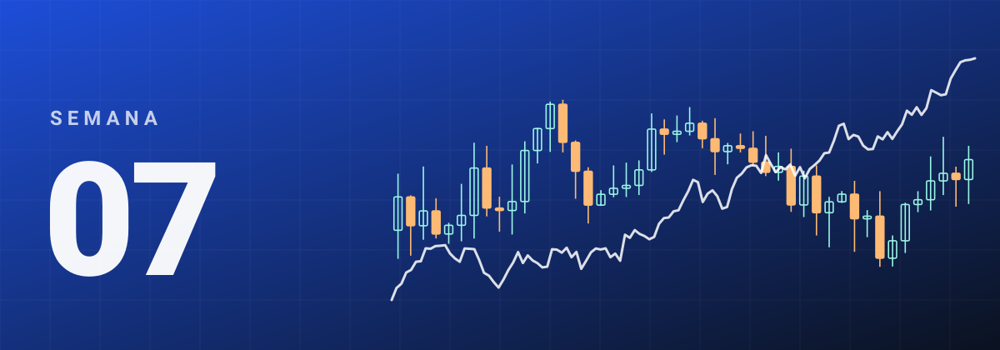
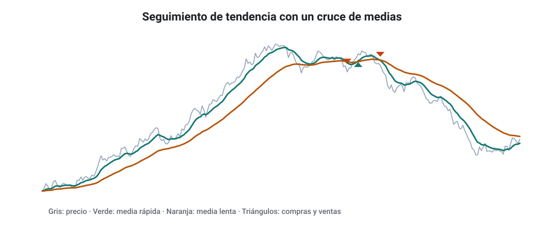
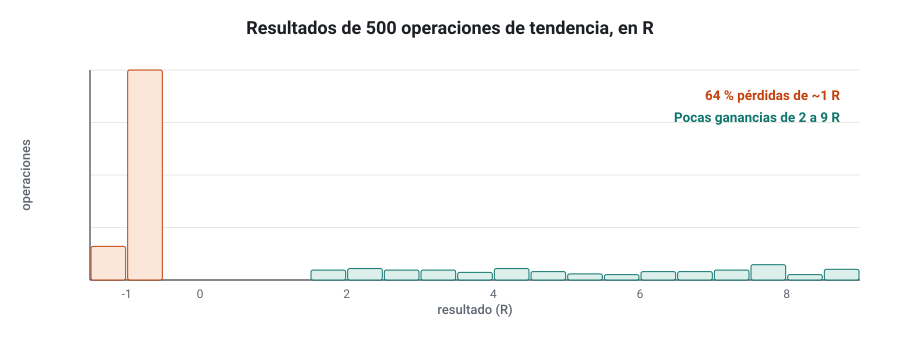
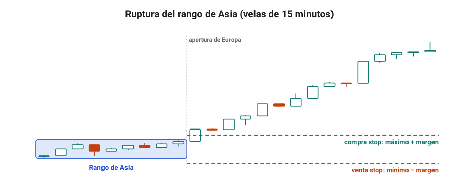
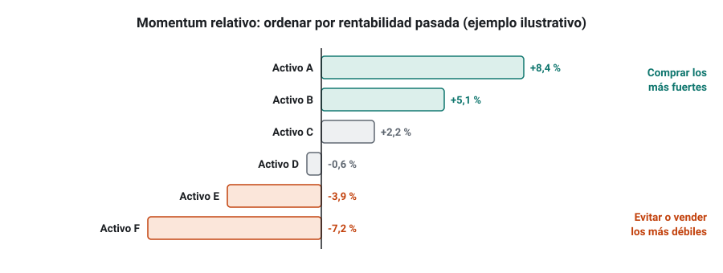
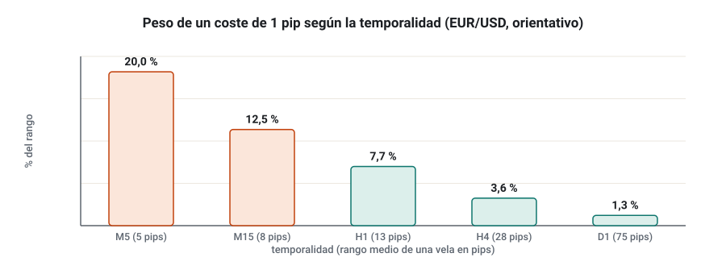

SEMANA 07 · ETAPA 2 · STRATEGYQUANT X
Tendencia, ruptura y momentum
Presentación de la semana
La semana pasada dejaste que el Builder combinara piezas casi sin guía. Esta semana empiezas a investigar con una idea: estudiarás tres familias de estrategias que buscan aprovechar que los movimientos tienden a continuar —la tendencia, la ruptura y el momentum—, verás qué estilo y qué temporalidad encajan con cada una y terminarás comparando tres proyectos, uno por familia. Dar al Builder una lógica concreta produce estrategias más sencillas, más comprensibles y, en general, menos sobreajustadas.
Objetivos
Al terminar la semana sabrás:
- Explicar la lógica del seguimiento de tendencia, sus indicadores y sus riesgos.
- Diseñar estrategias de ruptura de rangos y de sesiones con órdenes stop.
- Distinguir el momentum temporal del momentum relativo.
- Elegir estilo y temporalidad teniendo en cuenta los costes.
- Configurar en SQX proyectos orientados a una familia y comparar sus resultados.
Plan de la semana (22–25 horas)
| Bloque | Horas | Qué harás |
|---|---|---|
| Clases | 5 | Cinco lecciones: lectura y vídeos |
| Prácticas | 13 | Tres proyectos en SQX y su comparación |
| Investigación y evaluación | 4 | Investigación I-07, entrega y examen |
| Revisión y planificación | 2 | Glosario, cuaderno y plan de la semana 8 |
Qué necesitas
- SQX con los datos de EUR/USD de la semana 5. Para el momentum relativo, opcionalmente, datos de otros pares (GBP/USD, USD/JPY, AUD/USD).
- El proyecto de la semana 6 como plantilla.
- Tu plantilla de métricas.
Criterio para desbloquear la semana 8
Tener en estado APROBADO, con un 80 % o más cada uno:
- ☐ Examen de la semana 7
- ☐ Entrega práctica: comparación de tres familias
- ☐ Investigación I-07: pasos 1 a 5, 7 y 8 documentados
Trend following: lógica, indicadores y riesgos
Formato: clase de 40 minutos · Lectura: 35 minutos
La lógica
El seguimiento de tendencia (trend following) no intenta predecir. Espera a que el precio ya se esté moviendo en una dirección, se sube al movimiento y se queda mientras dure. Su hipótesis es que los mercados tienen periodos de tendencia más largos de lo que cabría esperar por azar, porque la información y los flujos de dinero llegan poco a poco.
Herramientas habituales
- Medias móviles: comprar cuando el precio o una media rápida cruza por encima de una media lenta.
- Canales de Donchian: comprar si el precio supera el máximo de las últimas N velas. Es la base de sistemas históricos como el de los llamados Turtle Traders de los años ochenta.
- ADX: mide la fuerza de la tendencia, sin dirección; sirve como filtro («solo operar si ADX > 25»).
- Salidas con trailing stop o con el cruce contrario, para dejar correr las ganancias.

Su perfil
- Tasa de acierto baja (con frecuencia del 30 % al 45 %) y ratio alto.
- Asimetría positiva: pocas operaciones muy grandes explican casi todo el beneficio.
- Rachas largas de pérdidas en mercados laterales.
- Funciona mejor en temporalidades altas (H4, D1) y en carteras de muchos mercados, porque en un solo mercado las tendencias buenas son escasas.

Sus riesgos
- Mercados laterales: el precio cruza las medias arriba y abajo y cada cruce es una pérdida.
- Dependencia de pocas operaciones: si te pierdes la gran tendencia del año, el año sale negativo.
- Psicología: pocas personas aguantan diez pérdidas seguidas esperando la buena.
Comprueba que lo has entendido
- ¿Por qué el seguimiento de tendencia tiene asimetría positiva?
- ¿Qué papel tiene el ADX en una estrategia de tendencia?
- ¿En qué tipo de mercado sufre más esta familia?
Breakout: rangos, sesiones y órdenes stop
Formato: clase de 40 minutos · Lectura: 35 minutos
La lógica
Una ruptura (breakout) aprovecha el momento en que el precio sale de una zona en la que estaba contenido. La idea es que, tras un periodo de calma, la volatilidad tiende a aumentar, y la primera salida del rango indica hacia dónde irá el movimiento.
Qué rango romper
- Rango de N velas: máximo y mínimo de las últimas 20 velas, por ejemplo.
- Rango de sesión: máximo y mínimo de la sesión asiática; se opera su ruptura al abrir Europa. Es una de las ideas más estudiadas en Forex intradía.
- Rango de apertura: máximo y mínimo de los primeros minutos de la sesión de un índice (opening range breakout).
- Volatilidad comprimida: Bandas de Bollinger muy estrechas o ATR bajo antes de romper.

Por qué con órdenes stop
Las órdenes stop entran solo si el precio confirma el movimiento. En SQX, una ruptura típica se construye con una orden stop de compra en el máximo del rango más un margen (por ejemplo, 0,2 ATR) y una de venta en el mínimo menos el margen, con stop loss en el lado opuesto o en un múltiplo del ATR.
Las falsas rupturas
El enemigo de esta familia es la falsa ruptura: el precio sale del rango, activa tu orden y vuelve dentro. Formas de reducirla:
- Exigir un margen por encima del máximo, no entrar justo en él.
- Filtrar por horario: las rupturas en horas de poca liquidez fallan más.
- Filtrar por volatilidad: romper un rango muy estrecho suele ser más fiable que romper uno ya muy amplio.
- Cancelar las órdenes no ejecutadas al cabo de unas horas.
Comprueba que lo has entendido
- Diseña una ruptura del rango de Asia: rango, órdenes, stop y cancelación.
- ¿Por qué las órdenes stop sufren más deslizamiento?
- Nombra dos filtros contra las falsas rupturas.
Momentum: fuerza relativa y persistencia
Formato: clase de 35 minutos · Lectura: 30 minutos
Dos tipos de momentum
- Momentum temporal (time-series momentum): un activo que ha subido en los últimos meses tiende a seguir subiendo un tiempo, y al revés. Se compara el activo consigo mismo. Está documentado en la literatura académica para futuros de muchos mercados (por ejemplo, el trabajo de Moskowitz, Ooi y Pedersen de 2012).
- Momentum relativo (cross-sectional momentum): entre varios activos, los que más han subido tienden a seguir haciéndolo mejor que los que menos. Se compara un activo con los demás. El estudio clásico, sobre acciones, es el de Jegadeesh y Titman de 1993.

Cómo se mide
- Rentabilidad de N periodos: cierre de hoy entre cierre de hace N periodos, menos 1.
- Indicador de momentum o ROC (rate of change): la misma idea en forma de indicador.
- RSI alto como señal de fuerza, no como «sobrecompra». El mismo indicador puede usarse en sentido contrario según la familia.
Momentum en SQX
El Builder trabaja con un símbolo por estrategia, así que el momentum temporal es el natural: «comprar si el cierre está por encima del de hace 100 velas y el RSI(14) > 55». El momentum relativo entre varios activos se aplica mejor a nivel de cartera (semana 13) o con herramientas externas.
Persistencia y horizonte
El momentum no dura para siempre. En los estudios, suele aparecer en horizontes de semanas a meses y puede invertirse a horizontes muy cortos o muy largos. Por eso, en la investigación, el horizonte es un parámetro que hay que justificar, no uno que el Builder deba elegir libremente.
Comprueba que lo has entendido
- ¿Qué diferencia hay entre momentum temporal y relativo?
- ¿Cómo puede el RSI servir a la vez para una estrategia de momentum y para una de reversión?
- ¿Por qué el horizonte del momentum debe justificarse?
Estilos: scalping, intradía, swing, medio y largo plazo; costes y temporalidades
Formato: clase de 35 minutos · Lectura: 30 minutos
Los estilos
| Estilo | Duración típica | Temporalidad | Operaciones al año | Lo que más pesa |
|---|---|---|---|---|
| Scalping | Segundos a minutos | M1–M5 | Miles | Costes y ejecución |
| Intradía | Minutos a horas, cierre en el día | M5–H1 | Cientos | Costes y horario |
| Swing | Días | H1–H4 | 50–200 | Gaps de fin de semana y swap |
| Medio plazo | Semanas | H4–D1 | 20–60 | Tamaño de muestra |
| Largo plazo | Meses | D1–W1 | Pocas | Muestra muy pequeña |
Los costes deciden la temporalidad
El coste de una operación es casi fijo en pips (spread más comisión), pero el movimiento que capturas crece con la temporalidad. Por eso, en temporalidades bajas, los costes se comen una parte enorme del beneficio.

Y la muestra decide la fiabilidad
Al otro extremo, una estrategia D1 de largo plazo puede hacer solo 20 operaciones al año: en 10 años, 200. Con tan pocas operaciones, es muy difícil distinguir ventaja de suerte. La temporalidad es siempre un equilibrio entre costes (que castigan lo rápido) y muestra (que castiga lo lento).
Comprueba que lo has entendido
- ¿Por qué el scalping es tan difícil para un minorista?
- ¿Qué problema tienen las estrategias de largo plazo en un backtest?
- ¿Qué temporalidad elegirías para una ruptura de la sesión de Asia y por qué?
Taller: tres familias, tres proyectos comparados
Formato: taller guiado de 60 minutos · Práctica: 8–10 horas, con generación nocturna
En este taller crearás tres proyectos en SQX, uno por familia, con los mismos datos, costes y filtros, y compararás lo que produce cada uno.
Paso 1 · Plantilla común
Duplica el proyecto de la semana 6. Mantén: EUR/USD, zona horaria del broker, IS 2014–2021, OOS 2022 en adelante, costes de tu ficha, tamaño fijo y los filtros de partida.
Paso 2 · Proyecto de tendencia (S07_TREND_H4)
- Temporalidad H4.
- Bloques: medias móviles, canales de Donchian (máximos y mínimos de N velas), ADX y ATR.
- Entradas: a mercado o stop.
- Salidas: stop loss en ATR, trailing stop o salida por condición contraria; sin take profit cercano.
Paso 3 · Proyecto de ruptura (S07_BREAKOUT_H1)
- Temporalidad H1.
- Bloques: máximos y mínimos de N velas o de la sesión, Bandas de Bollinger y ATR.
- Entradas: solo órdenes stop, con cancelación tras unas velas.
- Opción de trading: operar solo en el horario de Europa y Estados Unidos; cerrar al final del día.
- Deslizamiento algo mayor que en los otros proyectos.
Paso 4 · Proyecto de momentum (S07_MOM_H4)
- Temporalidad H4.
- Bloques: ROC o momentum, RSI y medias de largo plazo.
- Entradas a mercado; salidas en ATR o por pérdida de momentum.
Paso 5 · Compara
Lanza los tres proyectos el mismo tiempo (por ejemplo, 6 horas cada uno). Rellena una tabla con: estrategias probadas, estrategias guardadas, y para las 10 mejores de cada proyecto, la media de profit factor IS y OOS, la tasa de acierto media y el número medio de operaciones.
Comprueba que lo has entendido
- ¿Qué familia produjo más estrategias que superaran los filtros? ¿Y cuál mantuvo mejor el profit factor OOS?
- ¿Coincide la tasa de acierto de cada familia con lo que esperabas por la teoría?
- ¿Con qué familia seguirías investigando y por qué?
Glosario de la semana
| Término | Inglés | Definición |
|---|---|---|
| ADX | Average Directional Index | Indicador de la fuerza de una tendencia, sin dirección |
| Canal de Donchian | Donchian channel | Máximo y mínimo de las últimas N velas |
| Falsa ruptura | False breakout | Salida del rango que se revierte enseguida |
| Intradía | Intraday | Operativa que abre y cierra dentro del mismo día |
| Momentum relativo | Cross-sectional momentum | Tendencia de los activos más fuertes a seguir superando a los demás |
| Momentum temporal | Time-series momentum | Tendencia de un activo a continuar su movimiento reciente |
| Rango de apertura | Opening range | Máximo y mínimo de los primeros minutos de una sesión |
| ROC | Rate of change | Variación porcentual del precio en N periodos |
| Ruptura | Breakout | Salida del precio de una zona en la que estaba contenido |
| Scalping | Scalping | Operativa de muy corta duración con objetivos pequeños |
| Seguimiento de tendencia | Trend following | Estrategia que entra a favor de un movimiento ya iniciado |
| Swing | Swing trading | Operativa que mantiene posiciones durante días |
| Temporalidad | Timeframe | Duración de cada vela del gráfico |
Ejercicios obligatorios
E1 · Reglas de tendencia. Escribe una estrategia completa de tendencia en D1 con medias móviles y ADX: entrada, stop, salida y filtro.
E2 · Donchian. Explica en qué se diferencia «comprar si el cierre supera el máximo de 20 velas» de «comprar con una orden stop en el máximo de 20 velas».
E3 · Perfil. Una estrategia de tendencia acierta el 35 % con un ratio de 2,6. Calcula su esperanza en R y la racha de pérdidas más larga que cabe esperar en 300 operaciones (fórmula de la semana 3).
E4 · Ruptura de Asia. Con un rango de Asia de 1,0820–1,0845, un ATR(14) H1 de 12 pips y un margen de 0,25 ATR, calcula los precios de las dos órdenes stop y propón un stop loss para cada una.
E5 · Falsas rupturas. En tu demo, observa durante 5 días la ruptura del rango de Asia en EUR/USD y anota si fue válida (siguió al menos 20 pips) o falsa. Presenta los resultados en una tabla.
E6 · Momentum. Calcula la rentabilidad de 3 meses de cuatro pares (EUR/USD, GBP/USD, USD/JPY y AUD/USD) con datos reales del último trimestre y ordénalos por momentum relativo. Indica la fuente y la fecha.
E7 · Costes y temporalidad. Con un coste de 1,2 pips, calcula qué porcentaje del rango medio supone en M5 (5 pips), H1 (13 pips), H4 (28 pips) y D1 (75 pips).
E8 · Muestra. Una estrategia D1 hace 18 operaciones al año. ¿Cuántas tendrá en un backtest de 12 años? Con lo visto en la semana 4, ¿te parece suficiente?
E9 · Estilo propio. ¿Qué estilo encaja con tu tiempo, tu capital y tu carácter? Justifícalo en 150 palabras con los criterios de esta semana.
E10 · Lectura de reglas. Escribe en lenguaje normal las reglas de la mejor estrategia de cada proyecto del taller y clasifícalas: ¿son realmente de la familia que pretendías?
Investigación I-07 y entrega práctica
Investigación I-07 · ¿Qué familia funciona mejor en EUR/USD?
Paso 1 · Hipótesis. Ejemplo: «En EUR/USD, las estrategias de ruptura en H1 mantienen fuera de muestra un porcentaje mayor de su profit factor que las de tendencia en H4».
Paso 2 · Fuentes. Cita al menos una fuente académica o profesional sobre tendencia, ruptura o momentum en divisas, y resume qué encontró y con qué datos.
Paso 3 · Datos. Los del taller.
Paso 4 · Diseño del experimento. Define antes de lanzar: el mismo tiempo de generación para los tres proyectos, cuántas estrategias de cada uno analizarás y cómo las eliges, y qué medida usarás para comparar (por ejemplo, el cociente entre profit factor OOS e IS).
Paso 5 · Generación. Los tres proyectos del taller.
Paso 7 · Comparación. Tabla comparativa y un gráfico con el profit factor IS frente al OOS de las estrategias de cada familia, con un color por familia.
Paso 8 · Conclusiones. ¿Se confirma la hipótesis? ¿Es la diferencia lo bastante grande como para no deberse al azar? ¿Qué cambiarías para comprobarlo mejor?
Entrega práctica · Comparación de tres familias
Qué entregar
| Archivo | Contenido |
|---|---|
CODIGO_S07_ENT |
Documento con la configuración de los tres proyectos, la tabla comparativa del paso 5 y las reglas de la mejor estrategia de cada familia en lenguaje normal |
CODIGO_S07_SQX |
Archivos de los tres proyectos o de las tres mejores estrategias |
CODIGO_S07_INV |
Hoja y gráfico de la investigación I-07 |
| Ejercicios | E1 a E10 |
Cómo se evaluará
Se valora que los tres proyectos sean comparables (mismos datos, costes y filtros), que la comparación use métricas fuera de muestra y que las reglas estén bien explicadas. Si los proyectos no comparten configuración base, la comparación no es válida y la entrega queda como SUSPENSO.
Examen de la semana 7 · Variante A
Tiempo orientativo: 60 minutos · Puntuación: 100 puntos · Aprobado: 80 puntos · Puedes usar calculadora, pero no el material del curso ni el tutor de IA. Si suspendes, repetirás con otra variante.
Parte A · Opción múltiple (30 puntos, 2 por pregunta)
Parte B · Cálculo (45 puntos, 15 por ejercicio)
B1. Una estrategia de tendencia acierta el 32 % con una ganancia media de 3,1 R y una pérdida media de 1 R. a) Calcula su esperanza en R. b) Calcula la probabilidad de perder 8 operaciones seguidas. c) Calcula la racha de pérdidas más larga esperable en 250 operaciones.
B2. El rango de Asia de hoy es 1,0905–1,0931. El ATR(14) en H1 es de 10 pips. Usas un margen de 0,3 ATR y un stop loss de 1,5 ATR desde la entrada. Calcula: a) el precio de la orden de compra stop y su stop loss; b) el precio de la orden de venta stop y su stop loss; c) el riesgo en pips de cada orden.
B3. Una estrategia de ruptura en M15 tiene un beneficio medio bruto de 6 pips por operación ganadora, una pérdida media de 5 pips y un 52 % de acierto, sin costes. a) Calcula su esperanza en pips. b) Recalcúlala con 1,3 pips de coste por operación. c) ¿Qué conclusión sacas?
Parte C · Razonamiento (25 puntos)
En un máximo de 250 palabras: elige una de las tres familias de esta semana para seguir investigando en EUR/USD. Justifica la elección con argumentos de costes, temporalidad, tamaño de muestra, perfil de resultados y tolerancia psicológica.